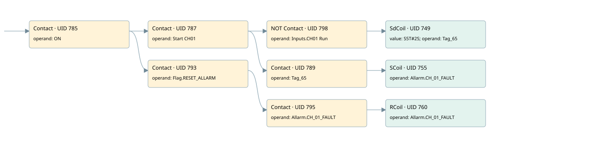

ch01
allarms 1 · 검색 색인 순서 20 · 원본 내부 NID 추정 22
백업 PLF 원본의 3050984 바이트 위치에서 복원한 XML. 검색 문서 1800의 객체 키 161022006662000000000000와 연결했다. 이름 해석 10/10개. 남은 RefId는 상수 또는 미해석 참조다.
연결 구조 다시 그리기
원본 Part/PCon/Wire를 이용한 연결도다. TIA 화면의 래더 배치 또는 실행 결과를 재현한 그림은 아니다. 핀 연결은 아래 표와 원본 XML을 기준으로 읽는다. 노드 위에 마우스를 두면 피연산자 이름을 볼 수 있다.

접점·코일·블록과 피연산자
| Part UID | Gate | Negated 핀 | 연결 피연산자 |
|---|---|---|---|
| 785 | Contact | operand = ON | |
| 787 | Contact | operand = Start CH01 | |
| 798 | Contact | operand | operand = Inputs.CH01 Run |
| 749 | SdCoil | value = S5T#2S; operand = Tag_65 | |
| 789 | Contact | operand = Tag_65 | |
| 755 | SCoil | operand = Allarm.CH_01_FAULT | |
| 793 | Contact | operand = Flag.RESET_ALLARM | |
| 795 | Contact | operand = Allarm.CH_01_FAULT | |
| 760 | RCoil | operand = Allarm.CH_01_FAULT |
접점 경로를 펼친 조건식
Contact·O/A·비교기의 원본 연결을 읽기 쉽게 펼친 보조 해석이다. POWER는 전원 레일 시작을 뜻한다. 호출 블록·에지·타이머의 내부 동작과 다중 쓰기 순서는 이 표로 실행 검증하지 않았다. 미해석 핀과 RefId는 원문 연결표에서 확인한다.
| UID | 동작 | 대상 | 원본 접점 경로 | 내용 |
|---|---|---|---|---|
| 749 | SdCoil | Tag_65 | ((ON AND Start CH01) AND NOT [Inputs.CH01 Run]) | 시간 동작 SdCoil; 타이머 의미 추가 확인 / 시간 인자 S5T#2S |
| 755 | SCoil | Allarm.CH_01_FAULT | ((ON AND Start CH01) AND Tag_65) | 조건 성립 시 Set |
| 760 | RCoil | Allarm.CH_01_FAULT | ((ON AND Flag.RESET_ALLARM) AND Allarm.CH_01_FAULT) | 조건 성립 시 Reset |
원본 배선 연결
| Wire UID | 동일 Wire 연결 끝점 |
|---|---|
| 797 | Powerrail {} ↔ Part 785.in |
| 771 | ORef 761 (ON) ↔ Part 785.operand |
| 786 | Part 785.out ↔ Part 787.in ↔ Part 793.in |
| 772 | ORef 762 (Start CH01) ↔ Part 787.operand |
| 788 | Part 787.out ↔ Part 798.in ↔ Part 789.in |
| 801 | ORef 799 (Inputs.CH01 Run) ↔ Part 798.operand |
| 21 | Part 798.out ↔ Part 749.in |
| 773 | ORef 763 (S5T#2S) ↔ Part 749.value |
| 774 | ORef 764 (Tag_65) ↔ Part 749.operand |
| 775 | ORef 765 (Tag_65) ↔ Part 789.operand |
| 22 | Part 789.out ↔ Part 755.in |
| 778 | ORef 767 (Allarm.CH_01_FAULT) ↔ Part 755.operand |
| 780 | ORef 768 (Flag.RESET_ALLARM) ↔ Part 793.operand |
| 794 | Part 793.out ↔ Part 795.in |
| 781 | ORef 769 (Allarm.CH_01_FAULT) ↔ Part 795.operand |
| 796 | Part 795.out ↔ Part 760.in |
| 783 | ORef 770 (Allarm.CH_01_FAULT) ↔ Part 760.operand |
식별자 해석 근거 10개
| ORef UID | RefId | 이름 | IdentXmlPart 파일 | 해석 방법 |
|---|---|---|---|---|
| 761 | 1 | ON | 0658-IdentXmlPart.xml | UID/RID + search-text + NID agreement |
| 762 | 89 | Start CH01 | 0658-IdentXmlPart.xml | UID/RID + search-text + NID agreement |
| 799 | 288 | Inputs.CH01 Run | 0657-IdentXmlPart.xml | UID/RID + search-text + NID agreement |
| 764 | 90 | Tag_65 | 0658-IdentXmlPart.xml | UID/RID + search-text + NID agreement |
| 763 | 28 | S5T#2S | 0656-IdentXmlPart.xml | literal candidate: UID/RID/NID + nearby named declarations + search-text agreement |
| 765 | 90 | Tag_65 | 0658-IdentXmlPart.xml | UID/RID + search-text + NID agreement |
| 767 | 92 | Allarm.CH_01_FAULT | 0657-IdentXmlPart.xml | UID/RID + search-text + NID agreement |
| 768 | 13 | Flag.RESET_ALLARM | 0657-IdentXmlPart.xml | UID/RID + search-text + NID agreement |
| 769 | 92 | Allarm.CH_01_FAULT | 0657-IdentXmlPart.xml | UID/RID + search-text + NID agreement |
| 770 | 92 | Allarm.CH_01_FAULT | 0657-IdentXmlPart.xml | UID/RID + search-text + NID agreement |
검색 코드 보조 자료
참조 명칭을 찾기 위한 자료이며 실행 순서나 AND/OR 관계는 위 연결표로 확인한다.
"on" "start ch01" "inputs"."ch01 run" "tag_65" s5t#2s "flag".reset_allarm "allarm".ch_01_fault "allarm".ch_01_fault "tag_65" "allarm".ch_01_fault